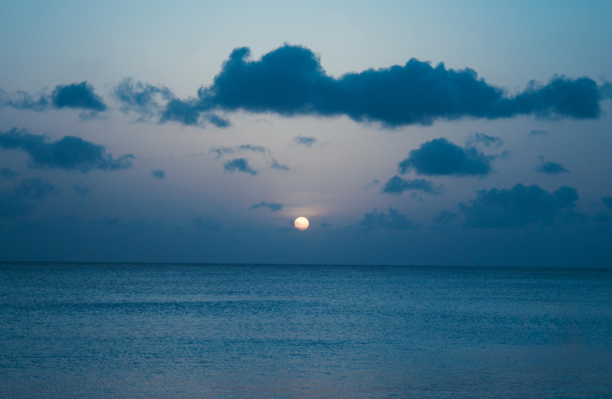

I'm Mateus.
Computer science student studying web development, so maybe one day I can work on this area.
I enjoy creating things, so making websites with HTML and CSS is something I particularly enjoy.
My goal is to be become a developer, be it webdeveloper or not.
I enjoy programming, mathematics and art. Blue is my favorite color. I had fun on this
assignment.
I like to think of myself as a creative person, one of the reasons enjoy development in general, and
webdevelopment is an interesting avenue for creation.
Some of my projects can be found here: Github.